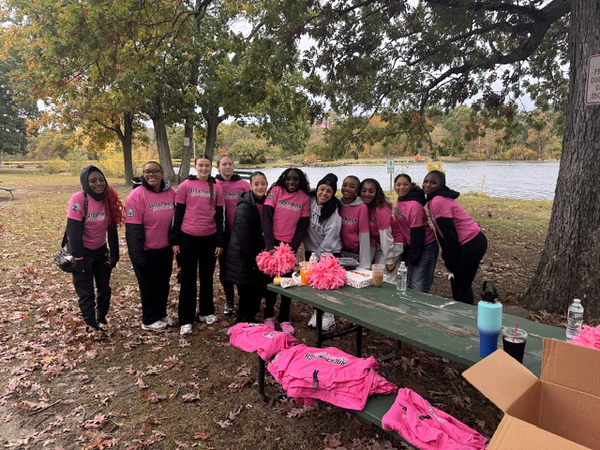
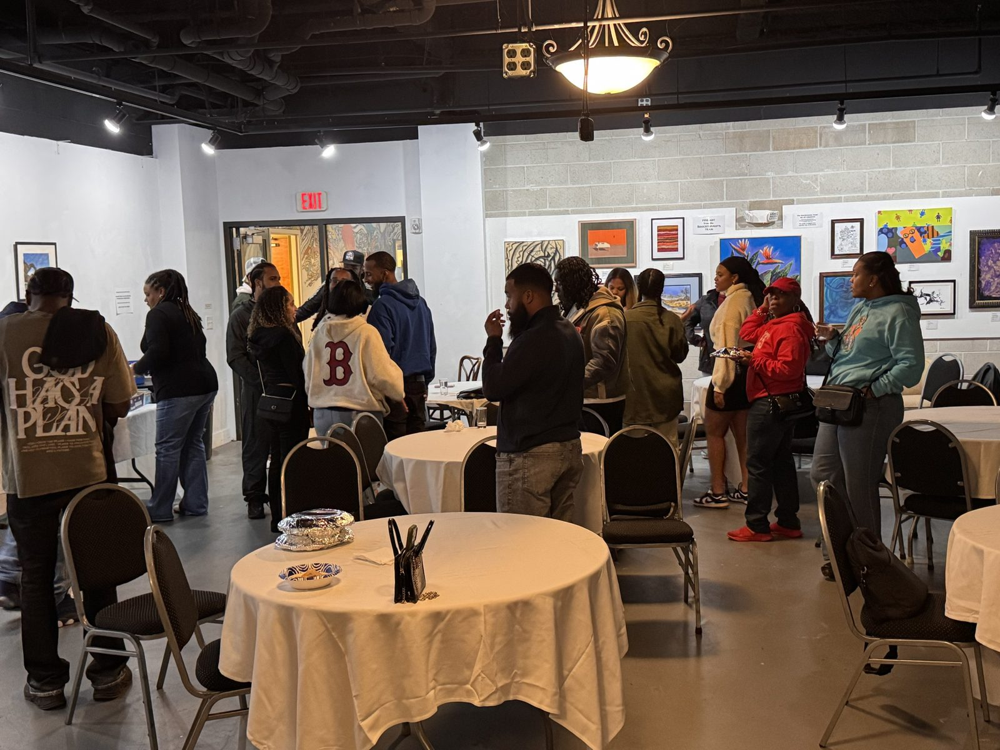

2026-10-17 · 1 MIN READ
BTR Breast Cancer Awareness Walk
BTR held its 2nd annual Breast Cancer Awareness Walk at D.W. Field Park in Brockton, with more than 80 people in attendance…
Read articlePEOPLE. PURPOSE. POSSIBILITY.
Life brings challenges. A strong community helps us move through them. Find the support, connection, and mentorship to take your next step.

WELCOME TO BTR
At Breaking Through Roadblocks, we believe that every challenge carries the potential for transformation. Our organization is committed to empowering minds, building community, and mentoring growth from setbacks to success.
We provide a private, supportive, and positive space where you can be yourself, identify areas for personal growth, share life experiences, and learn strategies to overcome the obstacles that hold you back.
Through our monthly meetings and community discussions, we foster genuine connections rooted in trust, encouragement, and accountability. Together, we celebrate progress, learn from setbacks, and strengthen the bonds that help each of us rise above life’s challenges.
This is more than a group; it’s a movement committed to becoming better individuals, leaders, and friends.
Join us as we break through barriers, empower one another, and thrive together.
A message from BTR


COMMUNITY SPOTLIGHT · OCTOBER 17, 2026
BTR’s 2nd annual Breast Cancer Awareness Walk brought our community together at D.W. Field Park in Brockton.
Special thanks to Ms. Balboni and the many Brockton High School students who came out to volunteer.
T.A.R.G.E.T.S. · YOUTH MENTORSHIP
Tenacity Allows Reaching Goals Even Through Struggles.
Every young person deserves someone in their corner. T.A.R.G.E.T.S. gives young men and women a place to be heard, be challenged, and grow, with mentors who show up for them week after week. Through honest conversations, hands-on workshops, and one-on-one guidance, participants build confidence, set real goals, and learn how to bounce back when life gets hard. They walk in unsure of what they can do. They walk out with a plan, a voice, and a community that believes in them.


LATEST UPDATES
2026-10-17 · 1 MIN READ
BTR held its 2nd annual Breast Cancer Awareness Walk at D.W. Field Park in Brockton, with more than 80 people in attendance…
Read article
2026-10-10 · 2 MIN READ
Our Men & Women Game Night brought the community together for an evening built around one big theme: how men and women communicate. The conversations went deep…
Read article
2026-08-21 · 3 MIN READ
Breaking Through Roadblocks (BTR) recently hosted our Coffee & Cream Networking Event at the Fuller Craft Museum, bringing together community leaders, professionals, entrepreneurs, friends, and supporters for an evening centered around one simple idea: building meaningful connections through conversation and community. From the moment guests arrived, the atmosphere was something special. Great food, an incredible live performance by Sweet Plantain Strings, an outstanding DJ, and the unique…
Read articleINVEST IN PEOPLE
Help BTR reach its $100,000 goal by December 31, 2026, supporting men’s, women’s, and youth programs in 2026–2027.
“Empowerment is not about making people stronger, it’s about changing the way the world perceives their strength.”
Breaking Through Roadblocks
ONE COMMUNITY. ONE BOLD GOAL.
Every contribution moves the mission forward. Help us reach our goal by December 31, 2026 at 11:59 PM.
Last verified October 12, 2026. Checking for the latest total…
View BTR’s fundraising tracker ↗Support a breakthrough ↗